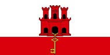
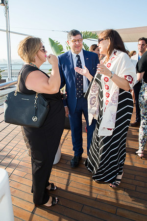
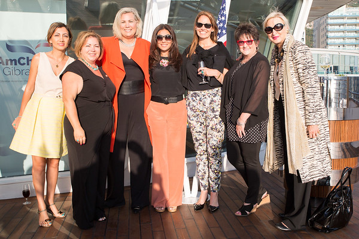
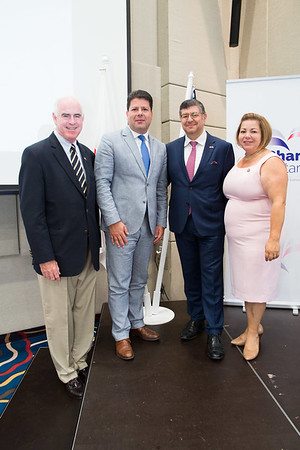
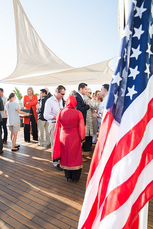
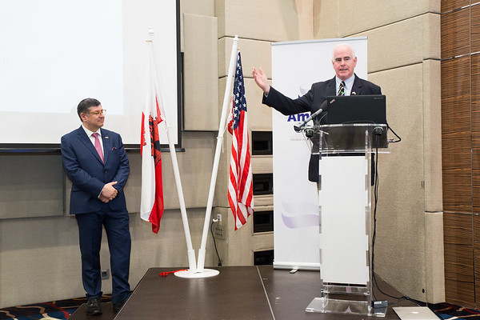
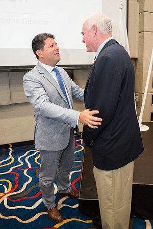

Overview
Gibraltar was one of the first territories to partner with ALF in the organization of certified trade missions, and over time it became one of the Foundation’s most emblematic cases. Across three separate missions, conducted in close collaboration with the Government of Gibraltar and officially certified by the U.S. Department of Commerce, the program showcased Gibraltar’s unique role as a financial and strategic hub at the crossroads of Europe and the Mediterranean.
Each mission introduced U.S. executives and investors to senior government officials, leading companies and sector representatives, giving participants direct exposure to Gibraltar’s competitive advantages and institutional vision.
Strategic Positioning
- Position Gibraltar globally as a reliable and attractive destination for U.S. and international investment.
- Build credibility and visibility by associating the territory with the U.S. Department of Commerce and ALF’s international network.
- Diversify economic prospects by presenting Gibraltar as a platform for innovation, services and trade.
- Strengthen bilateral ties between Gibraltar and the United States.
Outcomes & Legacy
One of the most significant outcomes was the creation of a lasting narrative of Gibraltar as an open, outward-looking economy willing to compete on the global stage. The presence of American investors who covered their own participation expenses underscored the seriousness of the opportunity and the credibility of Gibraltar as an investment destination.
For participants, the missions provided rare access to Gibraltar’s leadership, a deeper understanding of its strategic role in European markets and concrete opportunities in sectors ranging from digital innovation to maritime services. For Gibraltar’s institutions, the missions became landmark events and turning points in their international economic engagement.
Gallery
A selection of images from the Gibraltar Trade Missions and related institutional moments.






